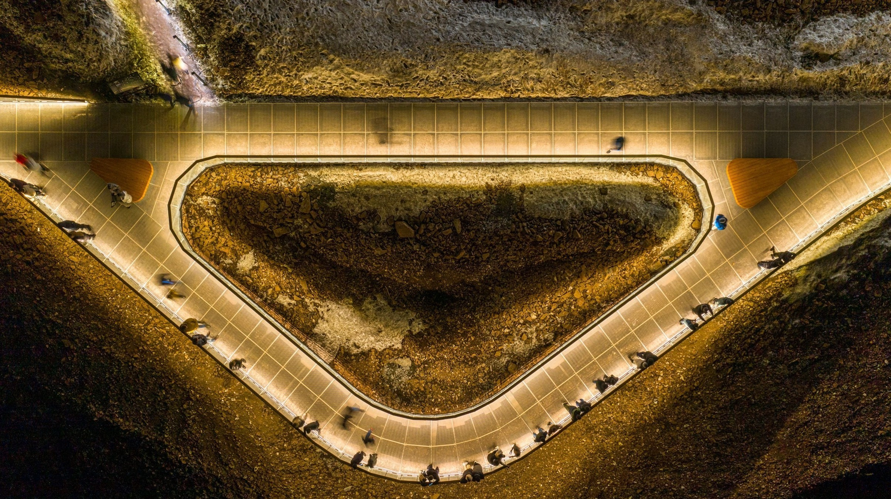
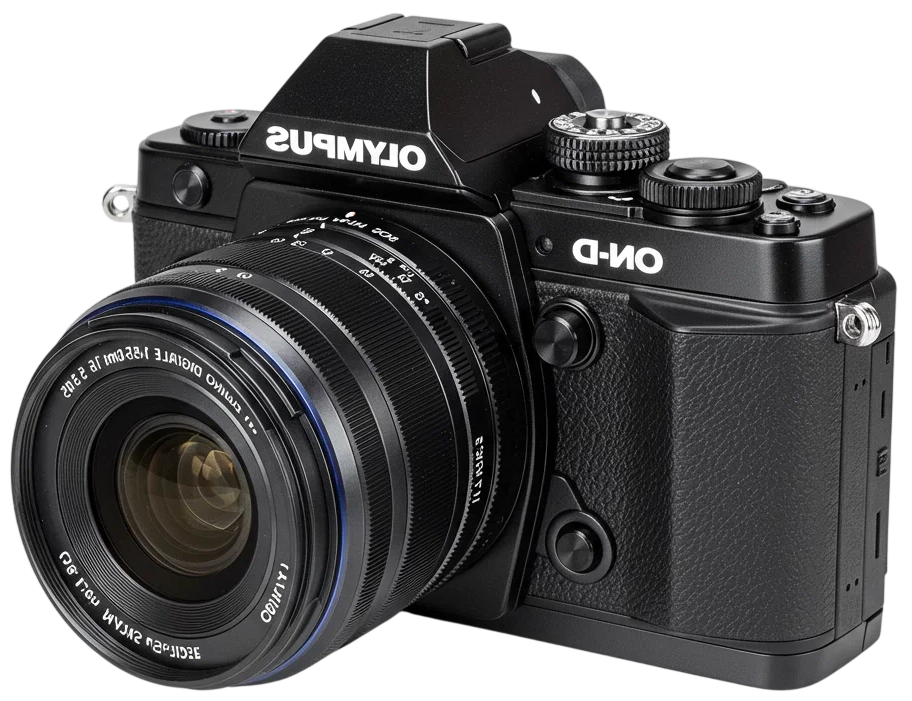
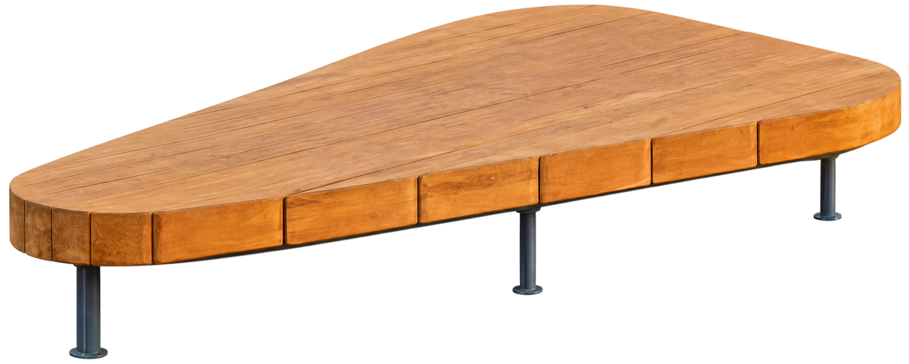
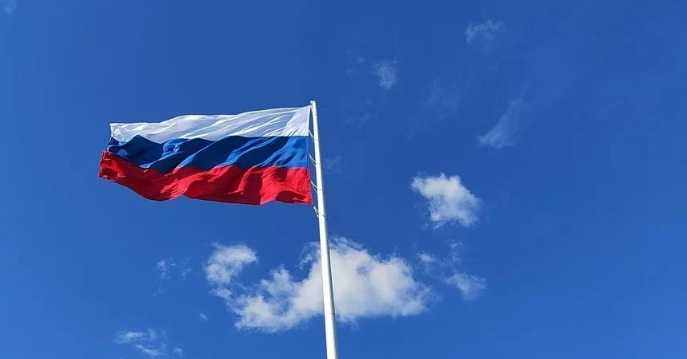
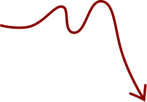
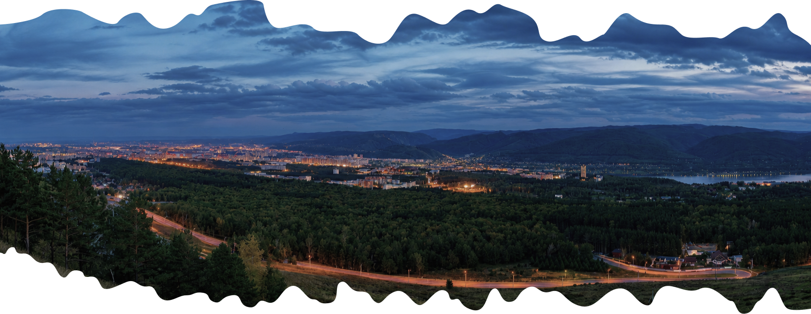

СЕРЕБРЯНЫЙ ЛОГ
Пространство, где дикая природа сочетается с удобной инфраструктурой для прогулок всей семьёй.

Город, Енисей и горы открываются здесь одним
панорамным кадром
То, что делает Николаевскую сопку одной из самых узнаваемых
смотровых площадок Красноярска.

ПАРЯЩАЯ ПЛОЩАДКА

Николаевская сопка считается одним из лучших мест в городе для встречи заката. С наступлением вечера Красноярск постепенно загорается огнями, а панорама меняется буквально с каждой минутой.

Это не просто точка с красивым видом, а благоустроенная территория для прогулок и отдыха. Широкие дорожки, удобные зоны отдыха и открытые виды делают Николаевскую сопку комфортным местом в любое время года.

Отсюда открывается одна из самых широких панорам Красноярска.
Найдите на карте знаковые места, которые хорошо видны со смотровой площадки.


Откройте другие знаковые места Красноярска,
которые находятся рядом.
Пространство, где дикая природа сочетается с удобной инфраструктурой для прогулок всей семьёй.

Один из крупнейших экопарков России с десятками маршрутов для прогулок, спорта и походов.

Уютная долина в лесу рядом с Плодово‑Ягодной станцией - здесь легко забыть, что ты всё ещё в Красноярске.
Всё необходимое, чтобы легко добраться и насладиться видами
Николаевской СопкиПодъём к смотровой площадке проходит по асфальтированной дороге. На территории оборудована парковка на 60 автомобилей
До остановки «Академия биатлона» ходят маршруты №31, 32, 88 и 90. Далее — пеший подъём к вершине
Сделайте путь частью впечатления — поднимитесь на сопку с видами на город и окружающие пейзажи
Вт–пт 12:00–21:00
Выходные и праздники 10:00–21:00
СТОИМОСТЬ
50 рублей